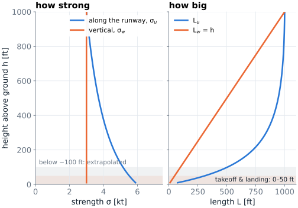
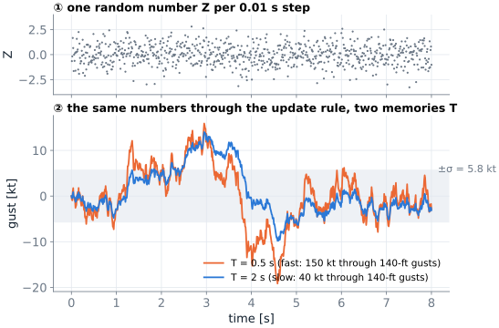

MATH 6006 Numerical Analysis · Final Project · Update 11/25/26
Balanced Field Length: adding gusts
The plan: turbulence as a stochastic differential equation, and many gusty takeoffs
John Harrison & Connor Seng
The gust model: Dryden turbulence
Named for Hugh Dryden (NACA). We use its low-altitude form, for heights below 1,000 ft
(military flying-qualities spec MIL-F-8785C, 1980).
W20mean wind speed at 20 ft
hheight above the ground
give, for each direction, a strength σ (standard
deviation of the gust speed) and a length L (typical gust size):
σw = 0.1 · W20vertical
σu = σw / (0.177 + 0.000823 h)0.4along the runway
Lw = h, Lu = h / (0.177 + 0.000823 h)1.2
σw = 0.1 · W20: the vertical gusts' typical size
is 10 % of the mean wind. W20 comes from the turbulence level:
light 15 · moderate 30 · severe 45 kt (moderate: σw = 3 kt).

Near the ground the formulas go beyond the measurements
behind them (mostly 100–1,000 ft). On the runway we hold h at 10 ft, about wing height.
Harrison & Seng · MATH 6006 · 11/25/26 update2
From statistics to a gust signal: an SDE
Each gust component g(t) is an Ornstein–Uhlenbeck process,
with its memory T = L / V (the time to fly through one gust):
dg = −(g / T) dt + σ √(2 / T) dW
Euler–Maruyama, every Δt = 0.01 s, Zn ~ N(0, 1):
gn+1 = gn− (gn / T) Δt+ σ √(2 / T) √Δt · Zn
pull: a gust fades like e−t/T
kick: √Δt because random steps add like a random walk;
√(2/T) so the gusts' standard deviation is exactly σ
gust + takeoff equations = one SDE system. Integrate with Euler–Maruyama and stochastic Heun, and
check each method's convergence order on a test SDE with an exact solution

Same random numbers, two memories: a fast aircraft (short T)
sees a jumpier gust.
Harrison & Seng · MATH 6006 · 11/25/26 update3
The plan: many gusty takeoffs → a runway with a confidence
1Calm-day solve
Fixes the schedule: V1, VR. The crew flies it;
nobody knows the gusts in advance.
2N gusty runs
Same schedule, new random gusts each run
(seeded). The crew reads airspeed with a 1 s lag.
3Runway per run
Takeoff field length and landing distance:
N answers instead of one.
4Confidence
Sort them: the runway that covers 95 % of
gusty days, with a confidence interval from order statistics.
Numerical checks
time step: strong convergence order, Euler–Maruyama vs Heun
number of runs: the P95's sampling error shrinks like 1/√N
zero gusts must reproduce the calm-day answer exactly
Final presentation
extra runway for 90 / 95 / 99 % of gusty days
light, moderate and severe turbulence
747-100 vs SR-71: which design is more gust-sensitive, and why